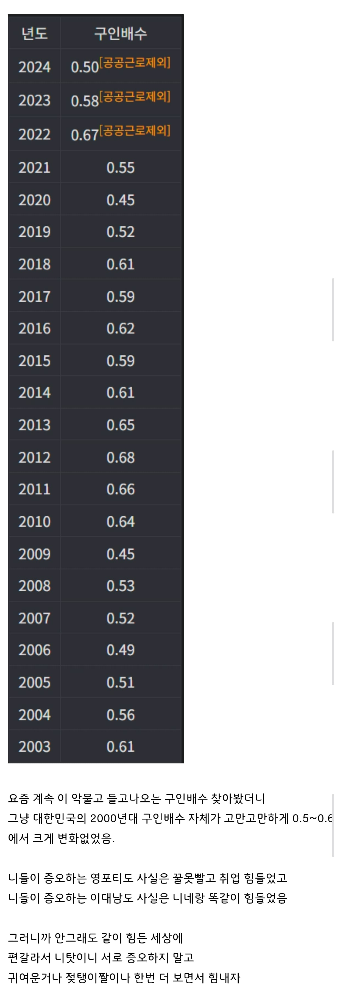

2026년 7월 기준, 국내 구인배수는 0.44

2026년 7월 기준, 국내 구인배수는 0.44
내가 똑같이에 꽂혔다고 언제 얘기함?
과거에 취업이 쉬웠다고 언제 얘기함?
그리고 회복할것으로 보인다는 미래의 예상이고 26년 현재와 예전이 고만고만함 아님? 현재와 과거가 고만고만하냐니까 지 맘대로 2000년대는 고만고만했다 이러고있네 왜 논점흐려? 왜 대답못해?
26년 현재 0.46이면 고만고만한데?
또 지맘대로 2000년대는 고만고만했다 이러고 있네 ㅇㅈㄹ하는데 저것도 본문 그대로 복사해온 인용이야... 따옴표해서 인용표시까지 했다고 알려줘도 금새 또 까먹냐 제발 글읽는법좀 배워
0.44인데 은근슬쩍 또 올려치지
그리고 이 글을 인용했다는거 자체가
니가 동의한다는 얘기인데 불리할땐 인용타령하고있네ㅋㅋㅋㅋㅋㅋㅋㅋㅋㅋㅋㅋㅋ0.44면 글로벌위기급 구인배수지만 평시랑 비슷해서 고만고만한거구만ㅋㅋㅋㅋㅋㅋㅋㅋㅋㅋㅋ0.39가도 뭐 엇비슷한거지 뭐 맞지? 애초에 0.1을 가도 뭐 반등할거로보이니까 비슷한거같음ㅇㅇ
ㅋㅋㅋㅋㅋㅋㅋㅋㅋ두번이나 니가 꽂힌 단어가 있는 문장 그대로 복사해서 가져온걸 눈치 못채는거보면 확실히 똑똑할수록 말의 맥락에 집중하고, 지능이 낮을수록 단어 에 집착한다의 표본이다.
구인배수가 뭔지도 몰라서 %라고 주장하는 부분도 그렇고 그냥 넌 저 본문의 취업은 항상힘들었으니 세대나눠 싸우지 말라는 내용을 이해할 지능이 안되는거 같으니까
이 글에서 구인배수가 무엇인지 배워간것만으로 만족해라
아 고지능이면 0.39가도 반등했으니 똑같아진거고 그런거야??
아 고지능이면 0.44인데 몰래 0.46이라고 얘기하고 지적당해도 못본척하는거야?
근데 은근슬쩍 0.02 올리는거 좀 추했다
6월 0.48
7월 0.44
이라고 하네 ㅎㅎ
그래 니가이김 내가졌다 으악 항복
그런식이면 5월은 0.42고
1월은 0.3이였는데 니 유리한대로 취사선택하는고야?
누가봐도 회복세인데요?....
똑같이 => 고만고만 => 0.02=> 자 이다음은!?
떨어질땐 안중요하고 회복세만 중요한고야? 25년은 0.36이였는데 이건 안보이는고야? 26년 지금까지 평균은 0.39인데
비슷한고야? 고만고만한거야?
0.5나 0.39나 뭐 비슷하지?
떨어지는게 지속되면 큰 문제가 되겠지만 회복했으니 결국 본문으로 귀결되는데요?
연평균내면 지금까지 0.39인데요ㅋㅋ
니가 가져온 애들도 다 연평균인데요ㅋㅋ
25년도 0.36이였는데요ㅋㅋㅋ
이게 비슷하다니 대단하당
근데 너는 구인배수가 문제가 아니고 그냥 지능때문에 취업못하는거같으니까 저거에 크게 연연안해도 괜찮아
그리고
26' (1)0.3 (2)0.37 (3)0.36 (4)0.45
(5)0.42 (6)0.48 (7)0.44
로 26년 평균은 0.4에요 ...
8월은 통계가 아직 안나온거 같고요 ㅎㅎ
하반기 취업시즌이 곧 올테니 화이팅 하세요!
전 이제 진짜 갑니다
아차차 본인이 올린 0.02는 좆도 아니지만 제가 올린건 지능이슈군용ㅠㅠ
취사선택에 이어 내로남불까지!!
근데 아직도 0.4면 혹시 0.5랑 비슷한걸까? 레인지가 0.5~0.6비슷했다더니
0.4도 비슷한거면 0.1도 뭐 0.2 0.3이랑 비슷한거겠넹 뀨잉 진짜 고지능이시당
배수는 %가 아니고 구직자 1명당 일자리가 몇 개 있는지야..
막줄 내용은 어디가고...!!
구인수격노검 어디감
그럼 씨발 저탱이를 가져와야 할거 아니야!!!!!!!!!
ㄹㅇ ㅈ탱이 어디감??

지랄 한다
그래서 ㅈ탱이어디감
옛날이 살기 쉽다는 애들 부모들은 다 50억이상 자산가지?ㅋㅋㅋㅋㅋ
그래서, 육덕폭유 젖탱이 짤은 어디감
알았으니 짤 어디?
쉬었음들 짜치는게 한명도 취업못하면
인정인데 그것도 아님 공무원 뽑지
반도체 현장가면 노가다 뽑지
대기업 뽑지 왜 지랄인지 모르겠음
좋은데 가고싶으면 노력을해서
대기업을 가고 하기싫으면 노가다를 가고
적당히 하고싶으면 9급을하든가
이래도 지랄 저래도 지랄
노력은 하기싫고 꿀은빨고싶고
돈은 많이벌고싶고
쉬었음은 나이를 떠나 쓰레기 새끼들임
댓글 5페이지인거보고 바로 팝콘 가져옴
으따 228개?ㅋㅋㅋ
대한민국의 2000년대 구인배수 자체가 '고만고만'하게 0.5~0.6에서 크게 변화없었음.
아 이젠 똑같이 아니고 저문장의 고만고만으로 옮겨탔어?
난 동의하는데
25년 배수에서 회복세가 0.46까지 올라왔고 어디까지 갈지는 모르겠지만 결국 저 평균에 수렴할것으로 예상하는데?
22 23 24에는 취업 어렵단 소리 안나왔을거 같지?
ㅋㅋㅋㅋㅋㅋㅋㅋㅋㅋㅋㅋㅋ